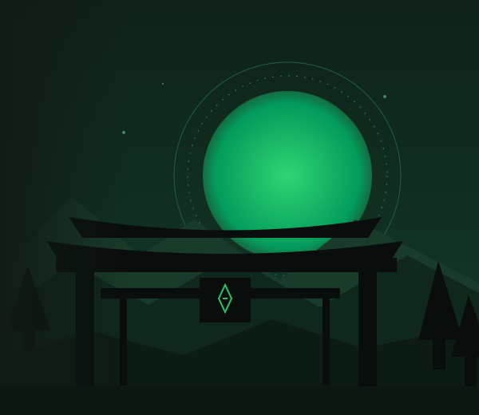

HUB
Explora las mecánicas, sistemas e ideas que estamos preparando para nuestro proyecto.
EXPLORAR MECÁNICAS
ELIGE POR DÓNDE EMPEZAR
Un mundo de sistemas.
Un espacio para entenderlos.
Personajes y clanes
Personajes originales, clanes de inicio y formas de acceso.
Estadísticas
Atributos del personaje, progresión individual y límites naturales.
Progresión ninja
Rangos ninja, ascensos narrativos y ritmo de progresión.
Entrenamiento
Actividades de práctica, instructores y protección frente al abuso.
Afinidades de chakra
Afinidad principal, aprendizaje de naturalezas y transmisión de técnicas.
Jutsus
Requisitos, aprendizaje y fichas de las técnicas ninja.
Combate
Habilidad del jugador, estilos de combate, armas y regeneración.
Dōjutsus
Habilidades oculares de clan y cuestiones todavía por diseñar.
Genjutsu y Percepción
Ilusiones, percepción mixta y detección pendiente de definir.
Rol narrativo
Dados voluntarios para apoyar historias sin sustituir el videojuego.
Economía
Ryō, negocios y vivienda: planteamiento y reglas por desarrollar.
Misiones y eventos
Tablones, contratos y eventos dirigidos por el equipo.
Gobierno y administración
Gobierno en rol, supervisión administrativa y transparencia.